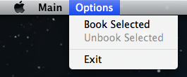

Figure 1: The Open Database File dialog
To run the application in standalone client mode, type the following command on the command line:
java -jar runme.jar alone
When the application starts up in this mode for the first time, you should see the following dialog:
Database files end with the .db extension. Included in this
application is a sample database file called db-2x1.db.
The OK button will be enabled once the name of the database file has been entered or the database file is selected via the Open dialog (Figure 2). Click on the OK button to close the Open Database File dialog and launch the main application window, or click on the Cancel button to exit the application.
The figure below shows the various components of the main application window.

The following are descriptions of each component in the main application window.
Fred will return records whose fields start with
Fred, Freddy, or Frederick, but records whose
fields start with fred or freddy will not be returned.You can click and drag the edges of the main application window to increase or decrease
its size. When you close this window, both its height and width are saved to a file called
suncertify.properties. When you run the application again, the height and
width of the main application window will be restored to the values saved in that file.
Note that the minimum height and width are 700 pixels and 1000 pixels, respectively.
Also, the location of the database file will be saved to suncertify.properties
when you close the main application window, so when you start up the application
in standalone client mode again, the Open Database File dialog will be bypassed and the
main application window will be displayed.
To book the selected contractor(s), enter the customer ID in the text field and then click on the OK button. Note that the customer ID cannot contain more than eight characters, must be at least one character long, and can contain only numbers.
If one or more selected records already have values for the Customer ID field, the error message in Figure 6 will be displayed when you try to book these records.
On Mac OS X, the Options menu is located in the Apple toolbar at the top of the screen (Figure 9). On Windows 7 and Linux, the Options menu is located near the top left-hand corner of the main application window.
In the Options menu, there are three menu items: Book Selected, Unbook Selected, and Exit. The Book Selected and Unbook Selected menu items perform the same functions as their button counterparts (see #1 and #2 above). Selecting Exit will close the application.
If you right-click (or press the ⌘ key and left-click at the same time) on one or more selected rows in the table, a popup menu will appear (Figure 10). In the menu, there are two menu items: Book Selected and Unbook Selected, both of which perform the same functions as the buttons above the table and the menu items in the Options menu (see #1 and #2 above).

|

|
| Figure 4: The Book Selected dialog | Figure 5: The Confirm Unbooking dialog |

|
.png)
|
|
Figure 6: Only two contractors were successfully booked. |
Figure 7: Only the Name column contains values that start with Buona
|
.png)
|
 |
|
Figure 8: The Location and Specialties columns contain values that start with E
|
Figure 9: The Options menu on OS X Mountain Lion |

|
|
| Figure 10: The popup menu | |